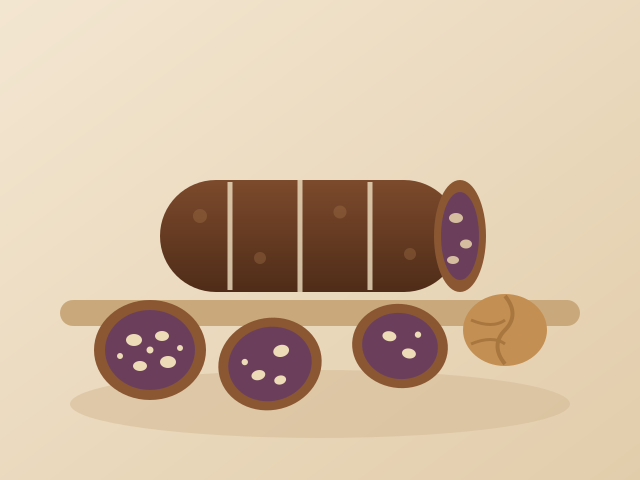

Klasik cevizli
Baskılı bandrolle flowpack yapılan standart perakende birimimiz. Müşterilerin ilk aldığı boy.
İncir sucuğu, Ege ailelerinin bereketli hasadı saklama yoluydu. Olgun incirler çekilir, bez torbaya basılır, iple bağlanır ve çubuk sertleşene kadar kilerde asılı kalırdı. Enine kesildiğinde her dilim, koyu incirin üzerinde ceviz mozaiği gösterir.
Biz de tam olarak öyle yapıyoruz; tek farkı sertifikalı bir tesiste olması. Tek satırlık içindekiler listesi: glikoz şurubu yok, jelleştirici yok, koruyucu yok. Sertlik katkıdan değil, presleme ve dinlendirmeden geliyor.

| Ürün adı | İncir sucuğu |
|---|---|
| Menşe | Aydın, Türkiye |
| İçindekiler | Kuru incir (en az %80), ceviz içi (en çok %20) |
| Çeşitler | Cevizli, sade, Antep fıstıklı (sezonluk) |
| Çubuk ölçüleri | Ø 45–55 mm, uzunluk 180–240 mm |
| Nem | %18–22 |
| Katkı maddesi | Yok. İlave şeker ve koruyucu içermez. |
| Alerjen | Sert kabuklu yemişler (ceviz / Antep fıstığı) |
| Raf ömrü | 4–18 °C ve %65 bağıl nemde 12 ay |
| GTİP kodu | 2008.99 |
5–7 mm kalınlığında dilimleyip soğuk olarak eski kaşar, küflü peynir veya kurutulmuş etlerle servis edin. Dilimlenmiş hâliyle beslenme çantası atıştırmalığı ve fırıncılıkta iç malzeme olarak da satılıyor.
Aynı tarif, her satış kanalının gerçekten sattığı boylarda — tek hediyelik çubuktan şarküterinin tezgâhta dilimlediği çubuğa kadar.
Baskılı bandrolle flowpack yapılan standart perakende birimimiz. Müşterilerin ilk aldığı boy.
Aynı çubuğun daha kalını; kilo başına daha avantajlı ve kış sezonunda güçlü bir performans gösteriyor.
Yalnızca preslenmiş incir; yemiş içermeyen ürün gruplarına ve okul satışına uygun. Ayrı hatta üretilir.
Cevizin yerine Antep fıstığı. Sınırlı miktarda, sezona göre tahsis edilir — erken haber verin.
Peynir reyonları ve hazır tüketim grupları için kapalı tabakta önceden dilimlenmiş 6 mm halkalar.
Yerinde dilimleyen mutfaklar ve tezgâhlar için tam boy, vakumlu çubuk.
İncir sucuğu ile sıralı kuru incir tablasını baskılı kutuda buluşturur. Yılın son çeyreğindeki en güçlü ürünümüz.
Yeniden paketleyiciler ve özel marka programları için iç torbalı kolide bandrolsüz çubuklar.
Tüm bandrol ve kutular; çok dilli etiketler ve pazara özel besin değeri tabloları dahil, sizin tasarımınızla basılabilir.
Güncel fiyat listesini isteyinİncir sucuğu, gurme perakendede en hızlı büyüyen ürünümüz. Sezon tahminini isteyin.